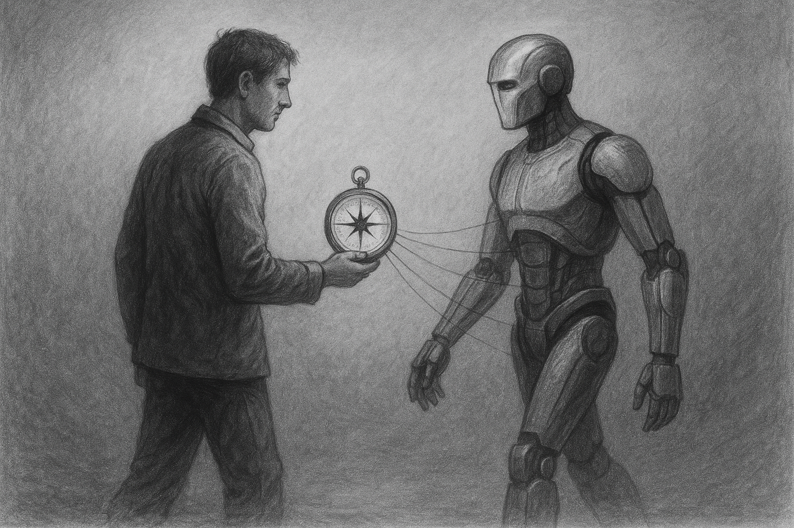

An Introduction to technical AI safety research
Our AI Alignment Fundamentals program runs every semester and provides an accessible introduction to cutting-edge AI safety research. We cover essential topics including RLHF, jailbreaking, interpretability, AI control, and more.
The group meets weekly to discuss carefully selected papers that build foundational knowledge in technical AI safety.
Food is provided at every meeting and no work is required outside of our sessions - just show up ready to engage with fascinating research and thoughtful discussion.
You can view materials and papers from our previous iteration to get a sense of the topics we cover and the depth of discussion.
